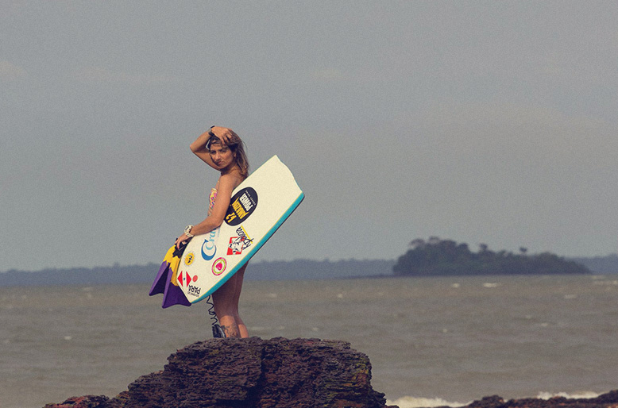

2 min de leitura
No dia 07 de Novembro, sábado, às quatro da tarde, eu, o fotógrafo Cristiano Cantão e mais um amigo que esta há pouco tempo morando em Belém, o carioca Felippo Pedrosa, nos juntamos e fomos fazer mais uma 'surf trip' em direção a ilha do Mosqueiro.
Desta vez fomos checar as condições na praia do Caruara, conhecida como praia do Cachimbo pela galera local, no Marahú. Esperávamos boas ondas, mais não foi desta vez. O vento estava bastante forte, o final de tarde prometia, mais a ondulação não colaborou.
Optamos então em ir checar o fundo do Farol, praia que fica do outro lado da Ilha, próxima do centro da cidade. Chegamos com a maré baixa, e o vento continuava bombando forte, mas as ondas continuavam pequenas e com pouca força, rendeu uma brincadeira no finalzinho da tarde mesmo com as fracas condições de surf.
O fotógrafo Cristiano Cantão conseguiu registrar alguns ótimos momentos meus para a terceira parte da matéria “Meu Mar De Água Doce” .
Estou concluindo a terceira parte do meu projeto na ilha do Mosqueiro. Partimos agora para checar novas bancadas em outra ilha próxima de Belém, que se chama Ilha do Cotijuba, em Icoaraci, onde tem ondulações surfáveis muito parecidas com Mosqueiro e as praias também são de água doce. O point é muito pouco explorado pelos surfistas de Belém.
Não consegui surfar as ondas que eu esperava Mosqueiro, pretendo voltar em breve em uma nova ocasião, pois tive que me ausentar justamente na lua cheia e fui competir em Santa Catarina na 2ª etapa do Catarinense de Bodyboard, no qual consegui fazer o pódio e terminar em 4º Lugar na categoria Pro.
É isso ai galera até a próxima!
Fotos: Cristiano Cantão
Pico: Praia do Farol – Mosqueiro – PA
Por Alexandra Ereiro/ Craud.net
Conto com o Co-Patrocínio da Seel Apoios: Bela Rosa | Kpaloa | Craud.net | Amazon Power | Luxo de Sereia.
Veja Mais. Website: Studio Surf.